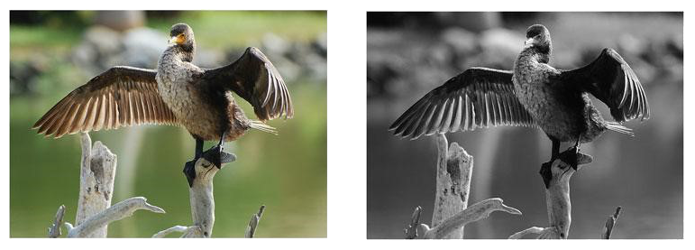
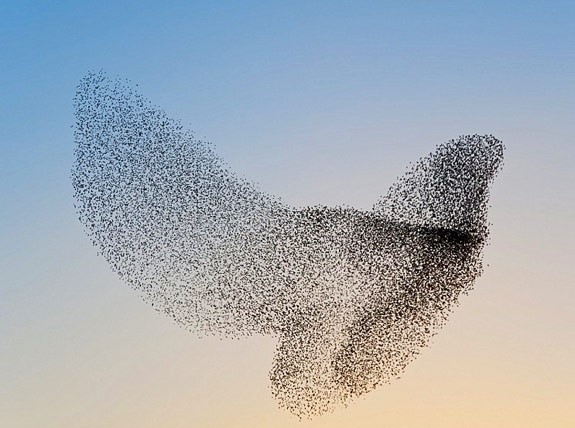
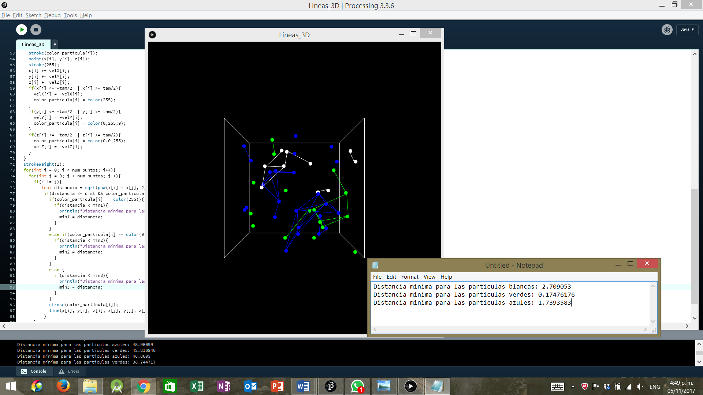

Escala de grises
El procesamiento de imágenes digitales es una herramienta de gran utilidad para la identificación y eliminación de datos irrelevantes, facilitando la detección de píxeles que poseen información de interés. Por otra parte, el tratamiento de imágenes involucra la aplicación de diversas técnicas dentro de las cuales se encuentran el uso de filtros, cuyo objetivo es el de alterar el color de cada uno de los píxeles que conforman la imagen. Uno de los filtros más reconocidos es la escala de grises, el cual se evidencia en el siguiente ejemplo
Una de las metodologías para aplicar el filtro en cuestión es tomar la imagen píxel por píxel e identificar aquel color perteneciente a la escala de grises que se encuentre más cerca al color del píxel analizado. Un buen indicador de la cercanía o similitud de dos colores es el cálculo de la distancia euclidiana entre los dos, tal y como se ve en la siguiente ecuación:
- Creatividad
- Operadores aritméticos y lógicos
- Sentencias condicionales
- Sentencias repetitivas
En este taller, dada una imagen, el estudiante se encargará de construir un programa en Processing que se encargará de identificar aquella transformación a escala de grises que garantice minimizar la distancia euclidiana total, esto es, la suma de las distancias euclidianas entre cada uno de los píxeles y el color que recibió en la conversión. Para ello se contará con tres colores pertenecientes a la escala de grises: negro (0,0,0); gris (123,123,123) y blanco (255,255,255).
- Los píxeles se conforman por tres tipos de colores: rojo, verde y azul, cada uno con intensidades que van desde 0 hasta 255
- Image -> Tipo de dato que representa una imagen en el programa
- loadImage(nombre_imagen) -> Función que sirve para cargar una imagen en Processing
- loadPixels() -> Se encarga de cargar los píxeles de la imagen
- Los píxeles en Processing se manejan como un vector
- Red(imagen.pixels[i]) -> Retorna el valor del canal rojo del píxel i
- Green(imagen.pixels[i]) -> Retorna el valor del canal verde del píxel i
- Blue(imagen.pixels[i]) -> Retorna el valor del canal azul del píxel i
El estudiante debe plantear la imagen a procesar como una matriz de pixeles en la que cada posición contiene el color en los tres canales (R, G, B). Posteriormente debe calcular la distancia euclidiana entre el pixel en cuestión y cada uno de los colores en la escala de grises por los cuales se puede sustituir (Blanco, gris y negro). Aquel color que se encuentre más cerca del pixel en cuestión será el que se asignará a este. Este proceso se lleva a cabo hasta cubrir todos los píxeles de la imagen.
Descargar soluciónCúmulo de particulas
Una de las simulaciones más conocidas en el ámbito de la computación gráfica es la de cúmulo de partículas, en la cual se puede replicar el comportamiento de enjambres y rebaños que se presentan en la naturaleza.
El comportamiento de un enjambre está descrito por la interacción entre cada uno de los elementos que lo conforma con aquellas partículas que se encuentran dentro de su campo visual. En esta oportunidad, se va a hacer hincapié en los pares de partículas que se encuentren más cerca una de la otra.
- Creatividad
- Operadores aritméticos y lógicos
- Sentencias condicionales
- Sentencias repetitivas
Teniendo un enjambre de tamaño N integrado por 3 tipos de partículas, se quiere identificar la distancia mínima en tiempo real entre un par de partículas de cada tipo. Un ejemplo del entorno gráfico y la respuesta que se debe dar se enuncia a continuación:
- Color(R, G, B) = permite crear una instancia del color con valores R, G, B en los canales rojo, verde y azul respectivamente.
El estudiante debe saber que se cuenta con un arreglo de partículas y otro que contiene el color de cada una de ellas. El alumno debe de elaborar una comparación entre todas las partículas y calcular la distancia existente entre aquellas que tengan el mismo color, si esta es menor que la mínima distancia global para ese tipo de partículas, se actualiza dicha variable y se muestra su resultado por pantalla.
Descargar solución